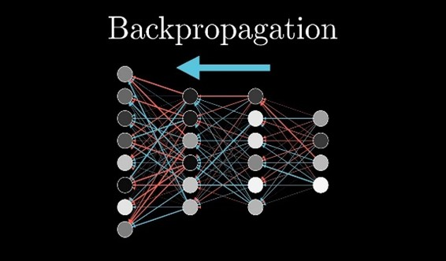

1 - Introduction to Neural Networks, Machine Learning and ANN Model
1.1 - Introduction to Neural Networks, Machine Learning
A neural network is a type of artificial intelligence that mimics the human brain, combined with computer science and statistics to solve common problems in AI. Neural networks, commonly referred to as artificial neural networks (ANN) or simulated neural networks (SNN), are a subset of machine learning that form the basis for deep learning techniques. Machine learning is a branch of artificial intelligence focused on building machines that can learn from data and improve performance without explicit training. Machine learning algorithms can be divided into two broad categories: supervised learning and unsupervised learning. Supervised learning refers to algorithms that are given a set of input strategies and learn to suggest new strategies for desired results. Unsupervised learning happens when an algorithm is given a set of non-text inputs and learns to find patterns or patterns in the data. Neural networks are composed of layers of nodes, or artificial neurons, that are connected by weights, or synapses. Each node receives inputs from the previous layer, multiplies them by the weights, adds a bias term, and passes them through an activation function that determines the output of the node. The output of one node becomes the input of another node in the next layer. The first layer is referred to as the input layer, the last layer as the output layer, and any layers in between as hidden layers.

The structure of the neural network is inspired by the neural networks that make up the human brain. There are about 100 billion neurons in the human brain that communicate with each other through synapses. Neurons can fire or activate when they receive enough signals from other neurons. The brain can store and process information in a distributed and balanced way, which makes it very powerful and flexible. Neural networks are modeled after the brain, and they are composed of a set of interconnected nodes, or neurons. It is made up of a network of linked units or nodes known as artificial neurons, which are loosely modelled after neurons in the biological brain. Each nerve receives signals from other neurons, processes them, and sends signals to other neurons. The signal is real and the processing is done by some nonlinear operation of the numbers of its components. Connections between neurons have weights that can be adjusted during learning and change the strength of the signal.

Neural networks can learn from data by adjusting their weights and biases through a process called training. The training should feed the network with a set of inputs and compare the results with the expected results. The difference between the actual output and the expected output is called the error or loss. The aim of the training is to adjust the weight and reduce the deflection using an optimization method ( eg. gradient descent. see fig1, fig2).
The network can use its learned weights and biases to make predictions for new ideas. Neural networks are used in machine learning for classification, regression, clustering, dimensional reduction, generative modelling, reinforcement learning, natural language processing, computer vision, speech recognition, etc. can be used for many tasks. Neural networks can handle complex and high-dimensional datasets that traditional algorithms deal with. Neural networks can also learn discrete and abstract features from data that are not easily captured by simple rules or equations. Neural networks are a type of artificial intelligence that tries to emulate the human brain and solve common problems in machine learning. Neural networks are composed of layers of nodes that are connected by weights and learn from data by adjusting their weights through training. Neural networks can be used for various tasks in machine learning, such as classification, regression, clustering, etc., but they also have some limitations and challenges that need to be addressed.
1.2 - ANN Model
Artificial neural networks (ANNs) are communication models inspired by the structure and function of the animal brain's central nervous system. This model was created utilizing network-discovered principles of neural organization. Machine learning and pattern recognition are capabilities of artificial neural networks.
Many uses of neural networks exist, including problem-solving and machine learning. Finance, medicine, engineering, and other disciplines are used in the domains. Speech recognition, image recognition, and natural language processing are some specific examples of ANN applications include speech recognition, image recognition, and natural language processing.
One of the crucial features of ANNs is their capability to learn from data. This allows them to ameliorate their performance over time as they're exposed to further data. ANNs can be trained using supervised or unsupervised literacy styles. In supervised literacy, the network is handed with labeled data and the thing is to learn a mapping from inputs to labor. In unsupervised literacy, the network is handed with unlabeled data and the thing is to discover patterns or connections in the data. ANNs are composed of layers of connected bumps or neurons. The first subcaste is the input subcaste, which receives the data. The last subcaste is the affair subcaste, which produces the network’s prognostications or opinions. Between the input and affair layers, there can be one or further retired layers.
The bumps in each subcaste are connected to the bumps in the coming subcaste by weighted connections. When data is fed into the network, it passes through each subcaste, with the bumps in each subcaste performing a weighted sum of their inputs and passing the result through an activation function. The affair of one subcaste becomes the input of the coming subcaste. The weights on the connections between the bumps are acclimated during training to ameliorate the network’s performance. There are numerous different types of ANNs, including feedforward Networks, intermittent networks, and convolutional networks. Each type of network has its strengths and sins and is suited to different types of problems. Feedforward networks are the simplest type of ANN. They've no cycles or circles and data flows in one direction from the input subcaste to the affair subcaste. Feedforward networks are generally used for bracket and retrogression tasks. Intermittent networks have cycles or circles, allowing them to maintain an internal state or memory. This makes them well-suited to tasks that involve sequences or time-series data, similar to speech recognition or natural language processing. Convolutional networks are a type of feedforward network that's designed to work with image data. They have a special armature that takes advantage of the spatial structure of images, allowing them to achieve high performance on image recognition tasks. In conclusion, ANNs are important computational models that are able of learning from data and making prognostications or opinions. They have a wide range of operations and can be used to break numerous different types of problems. Their inflexibility and capability to learn make them a precious tool in numerous fields.
There are several types of Artificial Neural Network (ANN) models, each with its own strengths and suited to different types of problems. Some of the most common types of ANN models include:
1. Feedforward Neural Network: This is the simplest type of ANN, where information moves in one direction from the input layer, through any hidden layers, to the output layer without cycles or loops. Feedforward networks are commonly used for classification and regression tasks.
2. Radial basis function Neural Network: This type of network uses radial basis functions as activation functions. They are commonly used for function approximation and interpolation.
3. Self-Organizing Neural Network: This type of network is used for unsupervised learning, where the goal is to find patterns or relationships in the data. It is commonly used for clustering and dimensionality reduction.
4. Recurrent Neural Network (RNN): This type of network has cycles or loops, allowing it to maintain an internal state or memory. This makes them well-suited to tasks that involve sequences or time-series data, such as speech recognition or natural language processing.
5. Convolutional Neural Network: This is a type of feedforward network that is designed to work with image data. It has a special architecture that takes advantage of the spatial structure of images, allowing it to achieve high performance on image recognition tasks.
6. Modular Neural Network: This type of network is composed of multiple smaller networks that work together to solve a problem. Each smaller network is responsible for a different part of the problem, and their outputs are combined to produce the final result.
2 - History of artificial intelligence and Its FutureHow to train models in a neural network and how machines learn.
2.1 - How to train models in a neural network
Training a model in a neural network involves conforming the weights and impulses of the network to ameliorate its performance on a given task. This is generally done using a dataset of labeled exemplifications, where the inputs and asked labors are known. The first step in training a neural network is to initialize the weights and impulses of the network. This can be done aimlessly or using a more sophisticated initialization system. Once the weights and impulses have been initialized, the training data is fed into the network. The network processes the inputs and produces an affair, which is compared to the asked affair. The difference between the network's affair and the asked affair is used to calculate an error signal, which is also used to modernize the weights and impulses of the network. This process is repeated for each illustration in the training dataset, with the weights and impulses being streamlined after each illustration.
The thing is to minimize the error signal over the entire training dataset. numerous different algorithms can be used to modernize the weights and impulses of a neural network. One of the most common is called backpropagation, which involves calculating the grade of the error signal concerning the weights and impulses and using this grade to modernize the weights and impulses in a way that reduces the error. In addition to backpropagation, numerous other optimization algorithms can be used to train neural networks, including stochastic grade descent, Adam, and others. These algorithms differ in terms of their effectiveness, stability, and capability to escape original minima. Once the training process is complete, the performing model can be used to make prognostications on new data. It's important to note that training a neural network is an iterative process, and it may be necessary to repeat the training process multiple times with different hyperparameters or initialization styles to achieve good performance. In conclusion, training a model in a neural network involves conforming the weights and impulses of the network using a dataset of labeled exemplifications. This is generally done using an optimization algorithm similar as backpropagation or stochastic grade descent. The thing is to minimize the error signal over the entire training dataset, performing in a model that can make accurate prognostications on new data.
What is Backpropagation?

Backpropagation is a supervised knowledge algorithm used for training artificial neural networks. It's a system for calculating the grade of the loss function concerning the weights and impulses of the network, which is also used to contemporize the weights and impulses to minimize the loss. The backpropagation algorithm works by propagating the error signal backward through the network, from the affair caste to the input caste. At each caste, the error signal is used to calculate the grade of the loss concerning the weights and impulses, which is also used to contemporize the weights and impulses. The backpropagation algorithm consists of two main ways a forward pass and a backward pass. In the forward pass, the input data is fed into the network and the affair is calculated. In the backward pass, the error signal is calculated and propagated backward through the network, and the weights and impulses are streamlined.
2.2 - How machines learn.

Machine Literacy is a subfield of artificial intelligence that focuses on the development of algorithms that allow machines to learn from data. The thing of machine literacy is to enable machines to automatically ameliorate their performance on a given task over time, without being explicitly programmed. There are several different approaches to machine literacy, including supervised literacy, unsupervised literacy, and underpinning literacy. Each approach has its strengths and sins, and the choice of approach depends on the specific problem being addressed. In supervised literacy, the machine is handed a dataset of labeled exemplifications, where the inputs and asked laborers are known. The machine uses this data to learn a mapping from inputs to laborers, which can also be used to make prognostications on new data. Supervised literacy is generally used for tasks similar to bracket and retrogression. In unsupervised literacy, the machine is handed a dataset of unlabeled exemplifications, where the inputs are known but the asked laborers are not. The machine uses this data to discover patterns or connections in the data, without being told what to look for. Unsupervised literacy is generally used for tasks similar to clustering and dimensionality reduction. In underpinning literacy, the machine learns by interacting with the terrain. The machine takes action in the terrain and receives feedback in the form of prices or corrections. The machine uses this feedback to learn which conduct leads to the loftiest prices over time. underpinning literacy is generally used for tasks similar to game playing and robot control. Anyhow of the approach used, the thing of machine literacy is always the same to enable machines to learn from data and ameliorate their performance over time. This is achieved through a process of trial and error, where the machine makes prognostications or opinions grounded on its current understanding of the problem, receives feedback on its performance, and uses this feedback to modernize its understanding and ameliorate its unborn performance. In conclusion, machines learn machine literacy by being exposed to data and using this data to ameliorate their performance on a given task over time. There are several different approaches to machine literacy, including supervised literacy, unsupervised literacy, and underpinning literacy. Each approach has its strengths and sins, and the choice of approach depends on the specific problem being addressed.
3 - Difficulties to train a model in neural network
Training a model in a neural network can be a challenging task, and several difficulties can arise during the training process. Some of the common difficulties include:
1. Data quality: The quality of the data used to train the model can have a significant impact on the performance of the neural network. If the data is noisy, incomplete, or biased, it can be difficult for the network to learn the underlying relationships between the inputs and outputs.
2. Data quantity: The amount of data available for training can also be a challenge. Neural networks often require large amounts of data to achieve good performance, and if the available data is limited, it can be difficult to train a model that generalizes well to new data.
3. Model complexity: The complexity of the neural network model can also be a challenge. If the model is too simple, it may not be able to capture the underlying relationships between the inputs and outputs. If the model is too complex, it may overfit the training data and perform poorly on new data.
4. Hyperparameter selection: The choice of hyperparameters, such as the learning rate and regularization parameter, can have a significant impact on the performance of the neural network. Choosing the right hyperparameters can be challenging, and it often requires trial and error.
5. Local minima: The optimization problem involved in training a neural network is non-convex, which means that there can be multiple local minima in the loss function. If the optimization algorithm gets stuck in a local minimum, it can be difficult to achieve good performance.
6. Vanishing gradients: The vanishing gradient problem can arise when training deep neural networks. This occurs when the gradients of the loss function concerning the weights become very small, making it difficult for the optimization algorithm to update the weights.
7. Exploding gradients: The exploding gradient problem is the opposite of the vanishing gradient problem. It occurs when the gradients of the loss function concerning the weights become very large, causing instability in the optimization algorithm.
In conclusion, several difficulties can arise when training a model in a neural network. These difficulties include challenges related to data quality and quantity, model complexity, hyperparameter selection, local minima, vanishing gradients, and exploding gradients. Overcoming these challenges requires careful experimentation and a deep understanding of both machine learning theory and practice.
Credits:
● 3blue1brown (Neural Network) https://www.3blue1brown.com/topics/neural-networks
● Colah’s Blog (Neural Networks, Manifolds, and Topology) Christopher Olah https://colah.github.io/posts/2014-03-NN-Manifolds-Topology/
● Distill pub (Understanding Convolutions on Graphs) https://distill.pub/